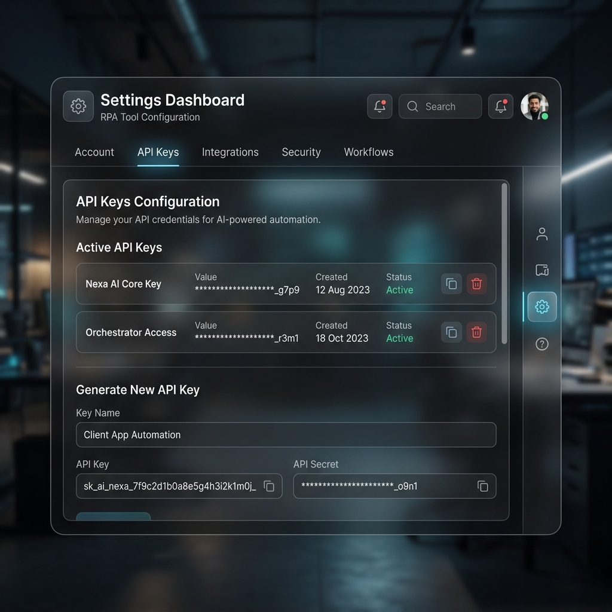
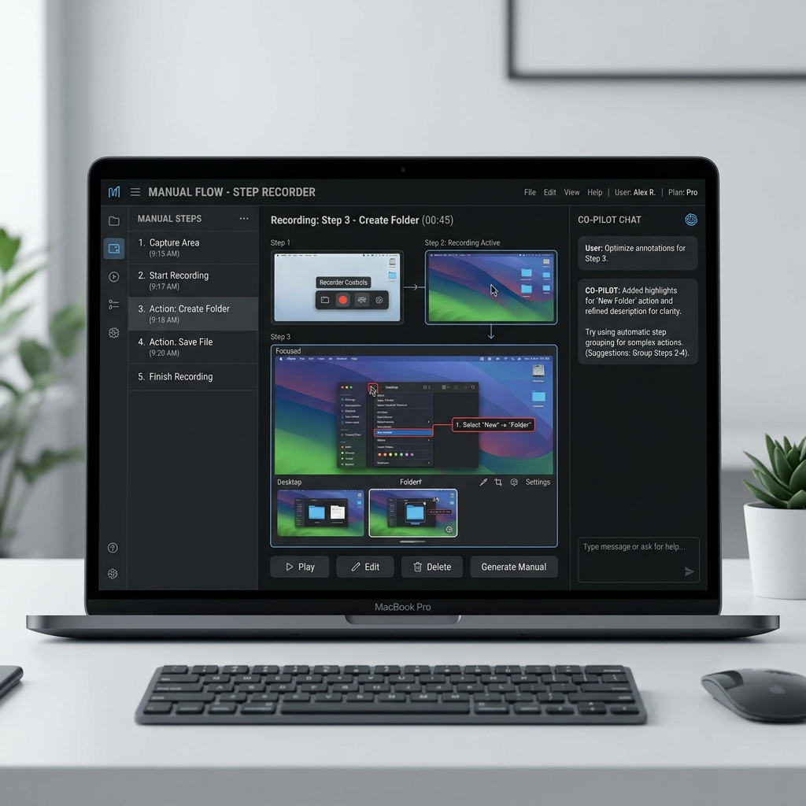

Step 1
APIキーとUWSCRの設定
act-gramを起動したら、まずは画面右上の「設定」ギアアイコンをクリックして設定ドロワーを開きます。 ご自身のGoogle/Gemini等のAPIキーを設定し、uwscr.exeのパス（未指定時は自動探索）を確認・保存してください。

Step 2
スクリプトの実行と自己リファクタリング
「スクリプト実行」コンソールでは、UWSCRスクリプト（.uws）をリアルタイムに実行・監視できます。 実行終了後、「ボトルネック分析 & 最適化提案」をクリックすることで、実測ログ（ミリ秒ファクト）に基づいて不要な固定SLEEPを自動で検出し、非同期ループ監視コードへのリファクタリング提案とファイル適用を行うことができます。
Step 3
AIオート・スライサーによるマニュアル作成
「マニュアル作成」タブでは、レコーダーが保存した生の操作ログフォルダ（log.jsonが含まれる場所）を指定するだけで、AIが操作の区切りを自律分割して論理的なステップに自動分割します。 自動生成されたUWSCRコードと、音声案内TTS、座標ズームと連動した対話型ガイドが瞬時に構築されます。
